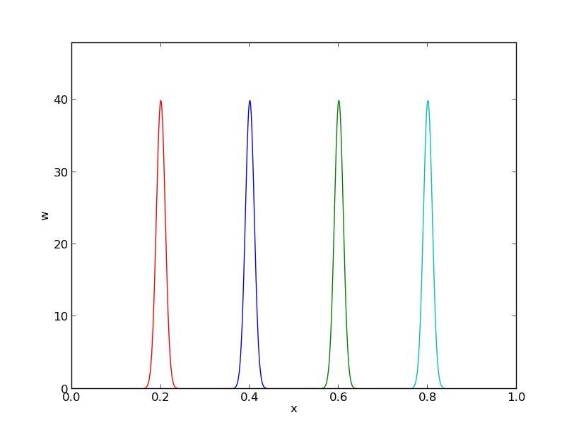

The finite element method is a very flexible approach for solving partial differential equations. Its two most attractive features are the ease of handling domains of complex shape in two and three dimensions and the ease of using higher-degree polynomials in the approximations. The latter feature typically leads to errors proportional to \( h^{d+1} \), where \( h \) is the element length and \( d \) is the polynomial degree. When the solution is sufficiently smooth, the ability to use larger \( d \) creates methods that are much more computationally efficient than standard finite difference methods (and equally efficient finite difference methods are technically much harder to construct).
The finite element method is usually applied for discretization in space, and therefore spatial problems will be our focus in the coming sections. Extensions to time-dependent problems usually employs finite difference approximations in time.
Before studying how finite element methods are used to tackle differential equations, we first look at how global basis functions and the least squares, Galerkin, and collocation principles can be used to solve differential equations.
Let us consider an abstract differential equation for a function \( u(x) \) of one variable, written as $$ \begin{equation} \mathcal{L}(u) = 0,\quad x\in\Omega\tp \end{equation} $$ Here are a few examples on possible choices of \( \mathcal{L}(u) \), of increasing complexity: $$ \begin{align} \mathcal{L}(u) &= \frac{d^2u}{dx^2} - f(x), \tag{1}\\ \mathcal{L}(u) &= \frac{d}{dx}\left(\dfc(x)\frac{du}{dx}\right) + f(x), \tag{2}\\ \mathcal{L}(u) &= \frac{d}{dx}\left(\dfc(u)\frac{du}{dx}\right) - au + f(x), \tag{3}\\ \mathcal{L}(u) &= \frac{d}{dx}\left(\dfc(u)\frac{du}{dx}\right) + f(u,x) \tag{4} \tp \end{align} $$ Both \( \dfc(x) \) and \( f(x) \) are considered as specified functions, while \( a \) is a prescribed parameter. Differential equations corresponding to (1)-(2) arise in diffusion phenomena, such as stationary (time-independent) transport of heat in solids and flow of viscous fluids between flat plates. The form (3) arises when transient diffusion or wave phenomena are discretized in time by finite differences. The equation (4) appears in chemical models when diffusion of a substance is combined with chemical reactions. Also in biology, (4) plays an important role, both for spreading of species and in models involving generation and propagation of electrical signals.
Let \( \Omega =[0,L] \) be the domain in one space dimension. In addition to the differential equation, \( u \) must fulfill boundary conditions at the boundaries of the domain, \( x=0 \) and \( x=L \). When \( \mathcal{L} \) contains up to second-order derivatives, as in the examples above, we need one boundary condition at each of the (two) boundary points, here abstractly specified as $$ \begin{equation} \mathcal{B}_0(u)=0,\ x=0,\quad \mathcal{B}_1(u)=0,\ x=L \end{equation} $$
There are three common choices of boundary conditions: $$ \begin{align} \mathcal{B}_i(u) &= u - g,\quad &\hbox{Dirichlet condition}\\ \mathcal{B}_i(u) &= -\dfc \frac{du}{dx} - g,\quad &\hbox{Neumann condition}\\ \mathcal{B}_i(u) &= -\dfc \frac{du}{dx} - H(u-g),\quad &\hbox{Robin condition} \end{align} $$ Here, \( g \) and \( H \) are specified quantities.
From now on we shall use \( \uex(x) \) as symbol for the exact solution, fulfilling $$ \begin{equation} \mathcal{L}(\uex)=0,\quad x\in\Omega, \end{equation} $$ while \( u(x) \) is our notation for an approximate solution of the differential equation.
u and not u_h in
code, we let the mathematical notation be dictated by the code's
preferred notation. In the relatively few cases where we need to work
with the exact solution of the PDE problem we call it \( \uex \) in
mathematics and u_e in the code (the function for computing
u_e is named u_exact).
A common model problem used much in the forthcoming examples is $$ \begin{equation} -u''(x) = f(x),\quad x\in\Omega=[0,L],\quad u(0)=0,\ u(L)=D \tp \tag{5} \end{equation} $$ A closely related problem with a different boundary condition at \( x=0 \) reads $$ \begin{equation} -u''(x) = f(x),\quad x\in\Omega=[0,L],\quad u'(0)=C,\ u(L)=D\tp \tag{6} \end{equation} $$ A third variant has a variable coefficient, $$ \begin{equation} -(\dfc(x)u'(x))' = f(x),\quad x\in\Omega=[0,L],\quad u'(0)=C,\ u(L)=D\tp \tag{7} \end{equation} $$
We can easily solve these model problems
using sympy. Some common code is defined first:
import sympy as sym
x, L, C, D, c_0, c_1, = sym.symbols('x L C D c_0 c_1')
The following function computes the solution symbolically for the model problem (5):
def model1(f, L, D):
"""Solve -u'' = f(x), u(0)=0, u(L)=D."""
# Integrate twice
u_x = - sym.integrate(f, (x, 0, x)) + c_0
u = sym.integrate(u_x, (x, 0, x)) + c_1
# Set up 2 equations from the 2 boundary conditions and solve
# with respect to the integration constants c_0, c_1
r = sym.solve([u.subs(x, 0)-0, # x=0 condition
u.subs(x,L)-D], # x=L condition
[c_0, c_1]) # unknowns
# Substitute the integration constants in the solution
u = u.subs(c_0, r[c_0]).subs(c_1, r[c_1])
u = sym.simplify(sym.expand(u))
return u
Calling model1(2, L, D) results in the solution
$$
\begin{equation}
u(x) = \frac{1}{L}x \left(D + L^{2} - L x\right)
\tag{8}
\end{equation}
$$
The model problem (6) can be solved by
def model2(f, L, C, D):
"""Solve -u'' = f(x), u'(0)=C, u(L)=D."""
u_x = - sym.integrate(f, (x, 0, x)) + c_0
u = sym.integrate(u_x, (x, 0, x)) + c_1
r = sym.solve([sym.diff(u,x).subs(x, 0)-C, # x=0 cond.
u.subs(x,L)-D], # x=L cond.
[c_0, c_1])
u = u.subs(c_0, r[c_0]).subs(c_1, r[c_1])
u = sym.simplify(sym.expand(u))
return u
to yield $$ \begin{equation} u(x) = - x^{2} + C x - C L + D + L^{2}, \tag{9} \end{equation} $$ if \( f(x)=2 \). Model (7) requires a bit more involved code,
def model3(f, a, L, C, D):
"""Solve -(a*u')' = f(x), u(0)=C, u(L)=D."""
au_x = - sym.integrate(f, (x, 0, x)) + c_0
u = sym.integrate(au_x/a, (x, 0, x)) + c_1
r = sym.solve([u.subs(x, 0)-C,
u.subs(x,L)-D],
[c_0, c_1])
u = u.subs(c_0, r[c_0]).subs(c_1, r[c_1])
u = sym.simplify(sym.expand(u))
return u
def demo():
f = 2
u = model1(f, L, D)
print 'model1:', u, u.subs(x, 0), u.subs(x, L)
print sym.latex(u, mode='plain')
u = model2(f, L, C, D)
f = x
u = model2(f, L, C, D)
print 'model2:', u, sym.diff(u, x).subs(x, 0), u.subs(x, L)
print sym.latex(u, mode='plain')
u = model3(0, 1+x**2, L, C, D)
print 'model3:', u, u.subs(x, 0), u.subs(x, L)
print sym.latex(u, mode='plain')
if __name__ == '__main__':
demo()
With \( f(x)=0 \) and \( \dfc(x)=1+x^2 \) we get $$ u(x) = \frac{C \tan^{-1}\left (L \right ) - C \tan^{-1}\left (x \right ) + D \tan^{-1}\left (x \right )}{\tan^{-1}\left (L \right )} $$
The fundamental idea is to seek an approximate solution \( u \) in some space \( V \), $$ \begin{equation*} V = \hbox{span}\{ \baspsi_0(x),\ldots,\baspsi_N(x)\}, \end{equation*} $$ which means that \( u \) can always be expressed as a linear combination of the basis functions \( \sequencej{\baspsi} \), with \( \If \) as the index set \( \{0,\ldots,N\} \): $$ \begin{equation*} u(x) = \sum_{j\in\If} c_j\baspsi_j(x)\tp\end{equation*} $$ The coefficients \( \sequencej{c} \) are unknowns to be computed.
(Later, in the section Boundary conditions: specified nonzero value, we will see that if we specify boundary values of \( u \) different from zero, we must look for an approximate solution \( u(x) = B(x) + \sum_{j} c_j\baspsi_j(x) \), where \( \sum_{j}c_j\baspsi_j\in V \) and \( B(x) \) is some function for incorporating the right boundary values. Because of \( B(x) \), \( u \) will not necessarily lie in \( V \). This modification does not imply any difficulties.)
We need principles for deriving \( N+1 \) equations to determine the \( N+1 \) unknowns \( \sequencei{c} \). When approximating a given function \( f \) by \( u=\sum_jc_j\basphi_j \), a key idea is to minimize the square norm of the approximation error \( e=u-f \) or (equivalently) demand that \( e \) is orthogonal to \( V \). Working with \( e \) is not so useful here since the approximation error in our case is \( e=\uex - u \) and \( \uex \) is unknown. The only general indicator we have on the quality of the approximate solution is to what degree \( u \) fulfills the differential equation. Inserting \( u=\sum_j c_j \baspsi_j \) into \( \mathcal{L}(u) \) reveals that the result is not zero, because \( u \) is only likely to equal \( \uex \). The nonzero result, $$ \begin{equation} R = \mathcal{L}(u) = \mathcal{L}(\sum_j c_j \baspsi_j), \end{equation} $$ is called the residual and measures the error in fulfilling the governing equation.
Various principles for determining \( \sequencej{c} \) try to minimize \( R \) in some sense. Note that \( R \) varies with \( x \) and the \( \sequencej{c} \) parameters. We may write this dependence explicitly as $$ \begin{equation} R = R(x; c_0, \ldots, c_N)\tp \end{equation} $$ Below, we present three principles for making \( R \) small: a least squares method, a projection or Galerkin method, and a collocation or interpolation method.
The least-squares method aims to find \( \sequencei{c} \) such that the square norm of the residual $$ \begin{equation} ||R|| = (R, R) = \int_{\Omega} R^2 \dx \end{equation} $$ is minimized. By introducing an inner product of two functions \( f \) and \( g \) on \( \Omega \) as $$ \begin{equation} (f,g) = \int_{\Omega} f(x)g(x) \dx, \end{equation} $$ the least-squares method can be defined as $$ \begin{equation} \min_{c_0,\ldots,c_N} E = (R,R)\tp \end{equation} $$ Differentiating with respect to the free parameters \( \sequencei{c} \) gives the \( N+1 \) equations $$ \begin{equation} \int_{\Omega} 2R\frac{\partial R}{\partial c_i} \dx = 0\quad \Leftrightarrow\quad (R,\frac{\partial R}{\partial c_i})=0,\quad i\in\If\tp \tag{10} \end{equation} $$
The least-squares principle is equivalent to demanding the error to be orthogonal to the space \( V \) when approximating a function \( f \) by \( u\in V \). With a differential equation we do not know the true error so we must instead require the residual \( R \) to be orthogonal to \( V \). This idea implies seeking \( \sequencei{c} \) such that $$ \begin{equation} (R,v)=0,\quad \forall v\in V\tp \tag{11} \end{equation} $$ This is the Galerkin method for differential equations.
This statement is equivalent to \( R \) being orthogonal to the \( N+1 \) basis functions only: $$ \begin{equation} (R,\baspsi_i)=0,\quad i\in\If, \tag{12} \end{equation} $$ resulting in \( N+1 \) equations for determining \( \sequencei{c} \).
A generalization of the Galerkin method is to demand that \( R \) is orthogonal to some space \( W \), but not necessarily the same space as \( V \) where we seek the unknown function. This generalization is called the method of weighted residuals: $$ \begin{equation} (R,v)=0,\quad \forall v\in W\tp \tag{13} \end{equation} $$ If \( \{w_0,\ldots,w_N\} \) is a basis for \( W \), we can equivalently express the method of weighted residuals as $$ \begin{equation} (R,w_i)=0,\quad i\in\If\tp \tag{14} \end{equation} $$ The result is \( N+1 \) equations for \( \sequencei{c} \).
The least-squares method can also be viewed as a weighted residual method with \( w_i = \partial R/\partial c_i \).
Much of the literature on finite element methods takes a differential equation problem and first transforms it to a variational formulation in an infinite-dimensional space \( V \), before searching for an approximate solution in a finite-dimensional subspace of \( V \). However, we prefer the more intuitive approach with an approximate solution \( u \) in a finite-dimensional space \( V \) inserted in the differential equation, and then the resulting residual is demanded to be orthogonal to \( V \).
In the context of the Galerkin method and the method of weighted residuals it is common to use the name trial function for the approximate \( u = \sum_j c_j \baspsi_j \). The space containing the trial function is known as the trial space. The function \( v \) entering the orthogonality requirement in the Galerkin method and the method of weighted residuals is called test function, and so are the \( \baspsi_i \) or \( w_i \) functions that are used as weights in the inner products with the residual. The space where the test functions comes from is naturally called the test space.
We see that in the method of weighted residuals the test and trial spaces are different and so are the test and trial functions. In the Galerkin method the test and trial spaces are the same (so far).
The idea of the collocation method is to demand that \( R \) vanishes at \( N+1 \) selected points \( \xno{0},\ldots,\xno{N} \) in \( \Omega \): $$ \begin{equation} R(\xno{i}; c_0,\ldots,c_N)=0,\quad i\in\If\tp \tag{15} \end{equation} $$ The collocation method can also be viewed as a method of weighted residuals with Dirac delta functions as weighting functions. Let \( \delta (x-\xno{i}) \) be the Dirac delta function centered around \( x=\xno{i} \) with the properties that \( \delta (x-\xno{i})=0 \) for \( x\neq \xno{i} \) and $$ \begin{equation} \int_{\Omega} f(x)\delta (x-\xno{i}) \dx = f(\xno{i}),\quad \xno{i}\in\Omega\tp \tag{16} \end{equation} $$ Intuitively, we may think of \( \delta (x-\xno{i}) \) as a very peak-shaped function around \( x=\xno{i} \) with an integral \( \int_{-\infty}^\infty delta(x-\xno{i})dx \) that evaluates to unity. Mathematically, it can be shown that \( \delta (x-\xno{i}) \) is the limit of a Gaussian function centered at \( x=\xno{i} \) with a standard deviation that approaches zero. Using this latter model, we can roughly visualize delta functions as done in Figure 1. Because of (16), we can let \( w_i=\delta(x-\xno{i}) \) be weighting functions in the method of weighted residuals, and (14) becomes equivalent to (15).
Figure 1: Approximation of delta functions by narrow Gaussian functions.

The idea of this approach is to demand the integral of \( R \) to vanish over \( N+1 \) subdomains \( \Omega_i \) of \( \Omega \): $$ \begin{equation} \int_{\Omega_i} R\, \dx=0,\quad i\in\If\tp \end{equation} $$ This statement can also be expressed as a weighted residual method $$ \begin{equation} \int_{\Omega} Rw_i\, \dx=0,\quad i\in\If, \end{equation} $$ where \( w_i=1 \) for \( x\in\Omega_i \) and \( w_i=0 \) otherwise.
Let us now apply global basis functions to illustrate the different principles for making the residual \( R \) small.
We consider the differential equation problem $$ \begin{equation} -u''(x) = f(x),\quad x\in\Omega=[0,L],\quad u(0)=0,\ u(L)=0 \tp \tag{17} \end{equation} $$
Our choice of basis functions \( \baspsi_i \) for \( V \) is $$ \begin{equation} \baspsi_i(x) = \sinL{i},\quad i\in\If\tp \tag{18} \end{equation} $$
An important property of these functions is that \( \baspsi_i(0)=\baspsi_i(L)=0 \), which means that the boundary conditions on \( u \) are fulfilled: $$ u(0) = \sum_jc_j\baspsi_j(0) = 0,\quad u(L) = \sum_jc_j\baspsi_j(L) =0 \tp $$ Another nice property is that the chosen sine functions are orthogonal on \( \Omega \): $$ \begin{equation} \int\limits_0^L \sinL{i}\sinL{j}\, \dx = \left\lbrace \begin{array}{ll} \half L & i=j \\ 0, & i\neq j \end{array}\right. \end{equation} $$ provided \( i \) and \( j \) are integers.
We can readily calculate the following explicit expression for the residual: $$ \begin{align} R(x;c_0, \ldots, c_N) &= u''(x) + f(x),\nonumber\\ &= \frac{d^2}{dx^2}\left(\sum_{j\in\If} c_j\baspsi_j(x)\right) + f(x),\nonumber\\ &= \sum_{j\in\If} c_j\baspsi_j''(x) + f(x)\tp \tag{19} \end{align} $$
The equations (10)
in the least squares method require an expression for
\( \partial R/\partial c_i \). We have
$$
\begin{equation}
\frac{\partial R}{\partial c_i} =
\frac{\partial}{\partial c_i}
\left(\sum_{j\in\If} c_j\baspsi_j''(x) + f(x)\right)
= \sum_{j\in\If} \frac{\partial c_j}{\partial c_i}\baspsi_j''(x)
= \baspsi_i''(x)\tp \end{equation}
$$
The governing equations for the unknown parameters \( \sequencej{c} \) are then
$$
\begin{equation}
(\sum_j c_j \baspsi_j'' + f,\baspsi_i'')=0,\quad i\in\If,
\end{equation}
$$
which can be rearranged as
$$
\begin{equation}
\sum_{j\in\If}(\baspsi_i'',\baspsi_j'')c_j = -(f,\baspsi_i''),\quad i\in\If\tp
\end{equation}
$$
This is nothing but a linear system
$$
\begin{equation*}
\sum_{j\in\If}A_{i,j}c_j = b_i,\quad i\in\If\tp
\end{equation*}
$$
The entries in the coefficient matrix are given by
$$
\begin{align*}
A_{i,j} &= (\baspsi_i'',\baspsi_j'')\nonumber\\
& = \pi^4(i+1)^2(j+1)^2L^{-4}\int_0^L \sinL{i}\sinL{j}\, \dx
\end{align*}
$$
The orthogonality of the sine functions simplify the coefficient matrix:
$$
\begin{equation}
A_{i,j} = \left\lbrace \begin{array}{ll}
{1\over2}L^{-3}\pi^4(i+1)^4 & i=j \\
0, & i\neq j
\end{array}\right.
\end{equation}
$$
The right-hand side reads
$$
\begin{equation}
b_i = -(f,\baspsi_i'') = (i+1)^2\pi^2L^{-2}\int_0^Lf(x)\sinL{i}\, \dx
\end{equation}
$$
Since the coefficient matrix is diagonal we can easily solve for
$$
\begin{equation}
c_i = \frac{2L}{\pi^2(i+1)^2}\int_0^Lf(x)\sinL{i}\, \dx\tp
\tag{20}
\end{equation}
$$
With the special choice of \( f(x)=2 \), the coefficients
can be calculated in sympy by
import sympy as sym
i, j = sym.symbols('i j', integer=True)
x, L = sym.symbols('x L')
f = 2
a = 2*L/(sym.pi**2*(i+1)**2)
c_i = a*sym.integrate(f*sym.sin((i+1)*sym.pi*x/L), (x, 0, L))
c_i = simplify(c_i)
print c_i
The answer becomes $$ \begin{equation*} c_i = 4 \frac{L^{2} \left(\left(-1\right)^{i} + 1\right)}{\pi^{3} \left(i^{3} + 3 i^{2} + 3 i + 1\right)} \end{equation*} $$ Now, \( 1+(-1)^i=0 \) for \( i \) odd, so only the coefficients with even index are nonzero. Introducing \( i=2k \) for \( k=0,\ldots,N/2 \) to count the relevant indices (for \( N \) odd, \( k \) goes to \( (N-1)/2 \)), we get the solution $$ \begin{equation} u(x) = \sum_{k=0}^{N/2} \frac{8L^2}{\pi^3(2k+1)^3}\sinL{2k}\tp \end{equation} $$ The coefficients decay very fast: \( c_2 = c_0/27 \), \( c_4=c_0/125 \). The solution will therefore be dominated by the first term, $$ \begin{equation*} u(x) \approx \frac{8L^2}{\pi^3}\sin\left(\pi\frac{x}{L}\right)\tp \end{equation*} $$
The Galerkin principle (11) applied to (17) consists of inserting our special residual (19) in (11) $$ \begin{equation*} (u''+f,v)=0,\quad \forall v\in V, \end{equation*} $$ or $$ \begin{equation} (u'',v) = -(f,v),\quad\forall v\in V\tp \end{equation} $$ This is the variational formulation, based on the Galerkin principle, of our differential equation. The \( \forall v\in V \) requirement is equivalent to demanding the equation \( (u'',v) = -(f,v) \) to be fulfilled for all basis functions \( v=\baspsi_i \), \( i\in\If \), see (11) and (12). We therefore have $$ \begin{equation} (\sum_{j\in\If} c_j\baspsi_j'', \baspsi_i)=-(f,\baspsi_i),\quad i\in\If\tp \end{equation} $$ This equation can be rearranged to a form that explicitly shows that we get a linear system for the unknowns \( \sequencej{c} \): $$ \begin{equation} \sum_{j\in\If} (\baspsi_i,\baspsi_j'')c_j = (f, \baspsi_i),\quad i\in\If\tp \end{equation} $$ For the particular choice of the basis functions (18) we get in fact the same linear system as in the least squares method because \( \baspsi''= -(i+1)^2\pi^2L^{-2}\baspsi \). Consequently, the solution \( u(x) \) becomes identical to the one produced by the least squares method.
For the collocation method (15) we need to decide upon a set of \( N+1 \) collocation points in \( \Omega \). A simple choice is to use uniformly spaced points: \( \xno{i}=i\Delta x \), where \( \Delta x = L/N \) in our case (\( N\geq 1 \)). However, these points lead to at least two rows in the matrix consisting of zeros (since \( \baspsi_i(\xno{0})=0 \) and \( \baspsi_i(\xno{N})=0 \)), thereby making the matrix singular and non-invertible. This forces us to choose some other collocation points, e.g., random points or points uniformly distributed in the interior of \( \Omega \). Demanding the residual to vanish at these points leads, in our model problem (17), to the equations $$ \begin{equation} -\sum_{j\in\If} c_j\baspsi_j''(\xno{i}) = f(\xno{i}),\quad i\in\If, \end{equation} $$ which is seen to be a linear system with entries $$ \begin{equation*} A_{i,j}=-\baspsi_j''(\xno{i})= (j+1)^2\pi^2L^{-2}\sin\left((j+1)\pi \frac{x_i}{L}\right),\end{equation*} $$ in the coefficient matrix and entries \( b_i=2 \) for the right-hand side (when \( f(x)=2 \)).
The special case of \( N=0 \) can sometimes be of interest. A natural choice is then the midpoint \( \xno{0}=L/2 \) of the domain, resulting in \( A_{0,0} = -\baspsi_0''(\xno{0}) = \pi^2L^{-2} \), \( f(x_0)=2 \), and hence \( c_0=2L^2/\pi^2 \).
In the present model problem, with \( f(x)=2 \), the exact solution is
\( u(x)=x(L-x) \), while for \( N=0 \) the Galerkin and least squares method
result in \( u(x)=8L^2\pi^{-3}\sin (\pi x/L) \) and the
collocation method leads to \( u(x)=2L^2\pi^{-2}\sin (\pi x/L) \).
We can quickly use sympy to verify that the maximum error
occurs at the midpoint \( x=L/2 \) and find what the errors are.
First we set up the error expressions:
>>> import sympy as sym
>>> # Computing with Dirichlet conditions: -u''=2 and sines
>>> x, L = sym.symbols('x L')
>>> e_Galerkin = x*(L-x) - 8*L**2*sym.pi**(-3)*sym.sin(sym.pi*x/L)
>>> e_colloc = x*(L-x) - 2*L**2*sym.pi**(-2)*sym.sin(sym.pi*x/L)
If the derivative of the errors vanish at \( x=L/2 \), the errors reach their maximum values here (the errors vanish at the boundary points).
>>> dedx_Galerkin = sym.diff(e_Galerkin, x)
>>> dedx_Galerkin.subs(x, L/2)
0
>>> dedx_colloc = sym.diff(e_colloc, x)
>>> dedx_colloc.subs(x, L/2)
0
Finally, we can compute the maximum error at \( x=L/2 \) and evaluate the expressions numerically with three decimals:
>>> sym.simplify(e_Galerkin.subs(x, L/2).evalf(n=3))
-0.00812*L**2
>>> sym.simplify(e_colloc.subs(x, L/2).evalf(n=3))
0.0473*L**2
The error in the collocation method is about 6 times larger than the error in the Galerkin or least squares method.
A problem arises if we want to apply popular finite element functions to solve our model problem (17) by the standard least squares, Galerkin, or collocation methods: the piecewise polynomials \( \baspsi_i(x) \) have discontinuous derivatives at the cell boundaries which makes it problematic to compute the second-order derivative. This fact actually makes the least squares and collocation methods less suitable for finite element approximation of the unknown function. (By rewriting the equation \( -u''=f \) as a system of two first-order equations, \( u'=v \) and \( -v'=f \), the least squares method can be applied. Also, differentiating discontinuous functions can actually be handled by distribution theory in mathematics.) The Galerkin method and the method of weighted residuals can, however, be applied together with finite element basis functions if we use integration by parts as a means for transforming a second-order derivative to a first-order one.
Consider the model problem (17) and its Galerkin formulation $$ \begin{equation*} -(u'',v) = (f,v)\quad\forall v\in V\tp \end{equation*} $$ Using integration by parts in the Galerkin method, we can "move" a derivative of \( u \) onto \( v \): $$ \begin{align} \int_0^L u''(x)v(x) \dx &= - \int_0^Lu'(x)v'(x)\dx + [vu']_0^L\nonumber\\ &= - \int_0^Lu'(x)v'(x) \dx + u'(L)v(L) - u'(0)v(0)\tp \tag{21} \end{align} $$ Usually, one integrates the problem at the stage where the \( u \) and \( v \) functions enter the formulation. Alternatively, but less common, we can integrate by parts in the expressions for the matrix entries: $$ \begin{align} \int_0^L\baspsi_i(x)\baspsi_j''(x) \dx &= - \int_0^L\baspsi_i'(x)\baspsi_j'(x) dx + [\baspsi_i\baspsi_j']_0^L\nonumber\\ &= - \int_0^L\baspsi_i'(x)\baspsi_j'(x) \dx + \baspsi_i(L)\baspsi_j'(L) - \baspsi_i(0)\baspsi_j'(0)\tp \tag{22} \end{align} $$ Integration by parts serves to reduce the order of the derivatives and to make the coefficient matrix symmetric since \( (\baspsi_i',\baspsi_j') = (\baspsi_i',\baspsi_j') \). The symmetry property depends on the type of terms that enter the differential equation. As will be seen later in the section Boundary conditions: specified derivative, integration by parts also provides a method for implementing boundary conditions involving \( u' \).
With the choice (18) of basis functions we see that the "boundary terms" \( \baspsi_i(L)\baspsi_j'(L) \) and \( \baspsi_i(0)\baspsi_j'(0) \) vanish since \( \baspsi_i(0)=\baspsi_i(L)=0 \). We therefore end up with the following alternative Galerkin formulation: $$ -(u'',v) = (u', v') = (f,v)\quad \forall v\in V\tp$$
Since the variational formulation after integration by parts make weaker demands on the differentiability of \( u \) and the basis functions \( \baspsi_i \), the resulting integral formulation is referred to as a weak form of the differential equation problem. The original variational formulation with second-order derivatives, or the differential equation problem with second-order derivative, is then the strong form, with stronger requirements on the differentiability of the functions.
For differential equations with second-order derivatives, expressed as variational formulations and solved by finite element methods, we will always perform integration by parts to arrive at expressions involving only first-order derivatives.
So far we have assumed zero Dirichlet boundary conditions, typically \( u(0)=u(L)=0 \), and we have demanded that \( \baspsi_i(0)=\baspsi_i(L)=0 \) for \( i\in\If \). What about a boundary condition like \( u(L)=D\neq0 \)? This condition immediately faces a problem: \( u = \sum_j c_j\basphi_j(L) = 0 \) since all \( \basphi_i(L)=0 \).
A boundary condition of the form \( u(L)=D \) can be implemented by demanding that all \( \baspsi_i(L)=0 \), but adding a boundary function \( B(x) \) with the right boundary value, \( B(L)=D \), to the expansion for \( u \): $$ \begin{equation*} u(x) = B(x) + \sum_{j\in\If} c_j\baspsi_j(x) \tp \end{equation*} $$ This \( u \) gets the right value at \( x=L \): $$ \begin{equation*} u(L) = B(L) + \sum_{j\in\If} c_j\baspsi_j(L) = B(L) = D\tp \end{equation*} $$ The idea is that for any boundary where \( u \) is known we demand \( \baspsi_i \) to vanish and construct a function \( B(x) \) to attain the boundary value of \( u \). There are no restrictions on how \( B(x) \) varies with \( x \) in the interior of the domain, so this variation needs to be constructed in some way. Exactly how we decide the variation to be, is not important.
For example, with \( u(0)=0 \) and \( u(L)=D \), we can choose \( B(x)=x D/L \), since this form ensures that \( B(x) \) fulfills the boundary conditions: \( B(0)=0 \) and \( B(L)=D \). The unknown function is then sought on the form $$ \begin{equation} u(x) = \frac{x}{L}D + \sum_{j\in\If} c_j\baspsi_j(x), \tag{23} \end{equation} $$ with \( \baspsi_i(0)=\baspsi_i(L)=0 \).
The particular shape of the \( B(x) \) function is not important as long as its boundary values are correct. For example, \( B(x)=D(x/L)^p \) for any power \( p \) will work fine in the above example. Another choice could be \( B(x)=D\sin (\pi x/(2L)) \).
As a more general example, consider a domain \( \Omega = [a,b] \) where the boundary conditions are \( u(a)=U_a \) and \( u(b)=U_b \). A class of possible \( B(x) \) functions is $$ \begin{equation} B(x)=U_a + \frac{U_b-U_a}{(b-a)^p}(x-a)^p,\quad p>0 \tp \tag{24} \end{equation} $$ Real applications will most likely use the simplest version, \( p=1 \), but here such a \( p \) parameter was included to demonstrate that there are many choices of \( B(x) \) in a problem. Fortunately, there is a general, unique technique for constructing \( B(x) \) when we use finite element basis functions for \( V \).
Remark. With the \( B(x) \) term, \( u \) does not in general lie in \( V=\hbox{span}\, \{\baspsi_0,\ldots,\baspsi_N\} \) anymore. Moreover, when a prescribed value of \( u \) at the boundary, say \( u(a)=U_a \) is different from zero, it does not make sense to say that \( u \) lies in a vector space, because this space does not obey the requirements of addition and scalar multiplication. For example, \( 2u \) does not lie in the space since its boundary value is \( 2U_a \), which is incorrect. It only makes sense to split \( u \) in two parts, as done above, and have the unknown part \( \sum_j c_j \baspsi_j \) in a proper function space.
We have seen that variational formulations end up with a formula involving \( u \) and \( v \), such as \( (u',v') \) and a formula involving \( v \) and known functions, such as \( (f,v) \). A widely used notation is to introduce an abstract variational statement written as $$ a(u,v)=L(v)\quad\forall v\in V,$$ where \( a(u,v) \) is a so-called bilinear form involving all the terms that contain both the test and trial function, while \( L(v) \) is a linear form containing all the terms without the trial function. For example, the statement $$ \int_{\Omega} u' v' \dx = \int_{\Omega} fv\dx\quad\hbox{or}\quad (u',v') = (f,v) \quad\forall v\in V$$ can be written in abstract form: find \( u \) such that $$ a(u,v) = L(v)\quad \forall v\in V,$$ where we have the definitions $$ a(u,v) = (u',v'),\quad L(v) = (f,v)\tp $$
The term linear means that $$ L(\alpha_1 v_1 + \alpha_2 v_2) =\alpha_1 L(v_1) + \alpha_2 L(v_2)$$ for two test functions \( v_1 \) and \( v_2 \), and scalar parameters \( \alpha_1 \) and \( \alpha_2 \). Similarly, the term bilinear means that \( a(u,v) \) is linear in both its arguments: $$ \begin{align*} a(\alpha_1 u_1 + \alpha_2 u_2, v) &= \alpha_1 a(u_1,v) + \alpha_2 a(u_2, v), \\ a(u, \alpha_1 v_1 + \alpha_2 v_2) &= \alpha_1 a(u,v_1) + \alpha_2 a(u, v_2) \tp \end{align*} $$ In nonlinear problems these linearity properties do not hold in general and the abstract notation is then $$ F(u;v)=0\quad\forall v\in V\tp$$
The matrix system associated with \( a(u,v)=L(v) \) can also be written in an abstract form by inserting \( v=\baspsi_i \) and \( u=\sum_j c_j\baspsi_j \) in \( a(u,v)=L(v) \). Using the linear properties, we get $$ \sum_{j\in\If} a(\baspsi_j,\baspsi_i) c_j = L(\baspsi_i),\quad i\in\If, $$ which is a linear system $$ \sum_{j\in\If}A_{i,j}c_j = b_i,\quad i\in\If,$$ where $$ A_{i,j} =a(\baspsi_j,\baspsi_i), \quad b_i = L(\baspsi_i)\tp$$ In many problems, \( a(u,v) \) is symmetric such that \( a(\baspsi_j,\baspsi_i) = a(\baspsi_i,\baspsi_j) \). In those cases the coefficient matrix becomes symmetric, \( A_{i,j}=A_{j,i} \), a property that can simplify solution algorithms for linear systems and make them more stable. The property also reduces memory requirements and the computational work.
The abstract notation \( a(u,v)=L(v) \) for linear differential equation problems is much used in the literature and in description of finite element software (in particular the FEniCS documentation). We shall frequently summarize variational forms using this notation.
Many physical problems can be modeled as partial differential equation and as a minimization problem. For example, the deflection \( u(x) \) of an elastic string subject to a transversal force \( f(x) \) is governed by the differential equation problem $$ -u''(x) = f(x),\quad x\in (0,L),\quad x(0)=x(L)=0\tp$$ Equivalently, the deflection \( u(x) \) is the function \( v \) that minimizes the potential energy \( F(v) \) in a string, $$ F(v) = \half\int_0^L \left((v')^2 - fv\right)\dx\tp$$ That is, \( F(u) = \min_{v\in V}F(v) \). The quantity \( F(v) \) is called a functional: a function of a function. Functionals very often involve integral expressions as above.
A range of physical problems can be formulated either as a differential equation or as a minimization of some functional. Quite often, the differential equation arises from Newton's 2nd law of motion while the functional expresses a certain kind of energy.
Many traditional applications of the finite element method, especially in solid mechanics and constructions with beams and plates, start with formulating \( F(v) \) from physical principles, such as minimization of elastic energy, and then proceeds with deriving \( a(u,v)=L(v) \), which is the formulation usually desired in software implementations.
The relation between a differential equation and minimization of a functional can be expressed in a general mathematical way using our abstract notation for a variational form: \( a(u,v)=L(v) \). It can be shown that the variational statement $$ a(u,v)=L(v)\quad\forall v\in V,$$ is equivalent to minimizing the functional $$ F(v) = {\half}a(v,v) - L(v) $$ over all functions \( v\in V \). That is, $$ F(u)\leq F(v)\quad \forall v\in V\tp $$
To see this, we write \( F(u)\leq F(\eta) \), \( \forall\eta\in V \) instead and set \( \eta=u + \epsilon v \), where \( v\in V \) is an arbitrary function in \( V \). For any given arbitrary \( v \), we can view \( F(v) \) as a function \( g(\epsilon) \) and find the extrema of \( g \), which is a function of one variable. We have $$ F(\eta) = F(u+\epsilon v) = \half a(u+\epsilon v,u + \epsilon v) - L(u + \epsilon v)\tp$$ From the linearity of \( a \) and \( L \) we get $$ \begin{align*} g(\epsilon) &= F(u+\epsilon u)\\ &= \half a(u + \epsilon v, u+\epsilon v) - L(u + \epsilon v)\\ &= \half a(u, u+\epsilon v) + \half \epsilon a(v, u+\epsilon u) - L(u) - \epsilon L(v)\\ &= \half a(u, u) + \half \epsilon a(u,v) + \half\epsilon a(v, u) + \half\epsilon^2 a(v,v) - L(u) - \epsilon L(v)\tp \end{align*} $$ If we now assume that \( a \) is symmetric, \( a(u,v)=a(v,u) \), we can write $$ g(\epsilon) = \half a(u,u) + \epsilon a(u,v) + \half\epsilon^2 a(v,v) - L(u) -\epsilon L(v)\tp$$ The extrema of \( g \) is found by searching for \( \epsilon \) such that \( g'(\epsilon)=0 \): $$ g'(\epsilon) = a(u,v) - L(v) + \epsilon a(v,v) = 0\tp$$ This linear equation in \( \epsilon \) has a solution \( \epsilon = (a(u,v) - L(u))/a(v,v) \) if \( a(v,v) > 0 \). But recall that \( a(u,v)=L(v) \) for any \( v \), so we must have \( \epsilon =0 \). Since the reasoning above holds for any \( v\in V \), the function \( \eta = u+\epsilon v \) that makes \( F(\eta) \) extreme must have \( \epsilon=0 \), i.e., \( \eta = u \), the solution of \( a(u,v)=L(v) \) for any \( v \) in \( V \).
Looking at \( g''(\epsilon) = a(v,v) \), we realize that \( \epsilon=0 \) corresponds to a unique minimum if \( a(v,v)>0 \).
The equivalence of a variational form \( a(u,v)=L(v)\ \forall v\in V \) and the minimization problem \( F(u)\leq F(v)\ \forall v\in V \) requires that 1) \( a \) is bilinear and \( L \) is linear, 2) \( a(u,v) \) is symmetric: \( a(u,v)=a(v,u) \), and 3) that \( a(v,v)>0 \).
Inserting \( v=\sum_j c_j\baspsi_j \) turns minimization of \( F(v) \) into minimization of a quadratic function of the parameters \( c_0,\ldots,c_N \): $$ \bar F(c_0,\ldots,c_N) = \sum_{j\in\If}\sum_{i\in\If} a(\baspsi_i,\baspsi_j)c_ic_j - \sum_{j\in\If} L(\baspsi_j)c_j $$ of \( N+1 \) parameters.
Minimization of \( \bar F \) implies $$ \frac{\partial\bar F}{\partial c_i}=0,\quad i\in\If\tp$$ After quite some algebra one finds $$ \sum_{j\in\If} a(\baspsi_i,\baspsi_j)c_j = L(\baspsi_i),\quad i\in\If,$$ which is the same system as the one arising from \( a(u,v)=L(v) \).
A branch of applied mathematics, called calculus of variations, deals with the technique of minimizing functionals to derive differential equations. The technique involves taking the variation (a kind of derivative) of functionals, which have given name to terms like variational form, variational problem, and variational formulation.